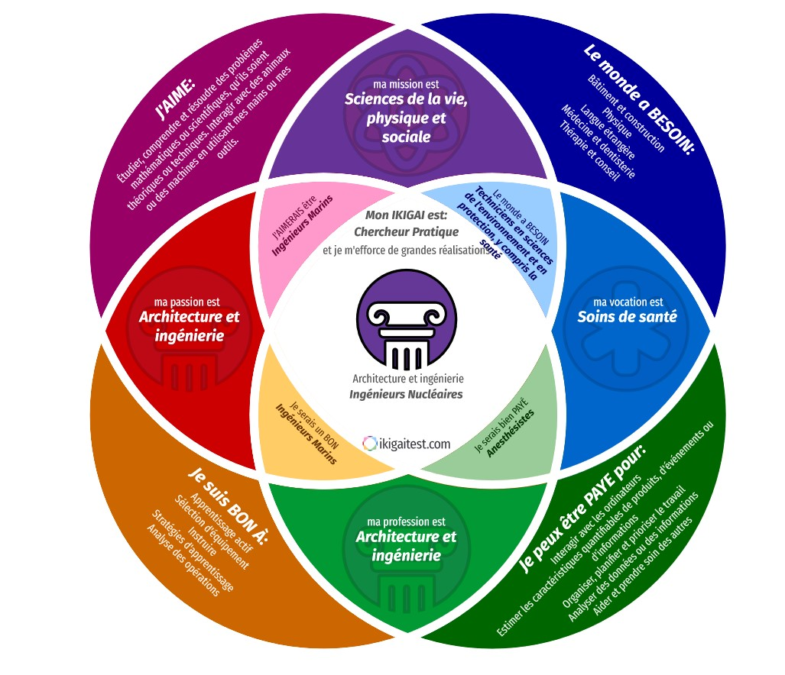

Thème du blog
Il existe énormément de blog ou de webjournal qui présentent l’actualité des technologies et les innovation émergentes. Mais il manque parfois une vision à long terme, ce qui est important pour moi.
Savoir quel framwork Javascript apprendre est complétement différent que de savoir si le javascript sera encore utilisé dans 10 ans. Je pense qu’un bon ingénieur doit veiller à la technologie de demain, mais aussi l’évolution d’après demain.
Ikigai
Mon Ikigai est “Chercheur Pratique”.
La recherche pratique est un domaine large et non délimité. J’ai essayé d’orienter ce blog sur l’émergence des technologies, une nouvelle découverte qui pourrait changer radicalement les enjeux techniques, ce qui est déja arrivé par le passé, avec le transistor, internet, etc…
